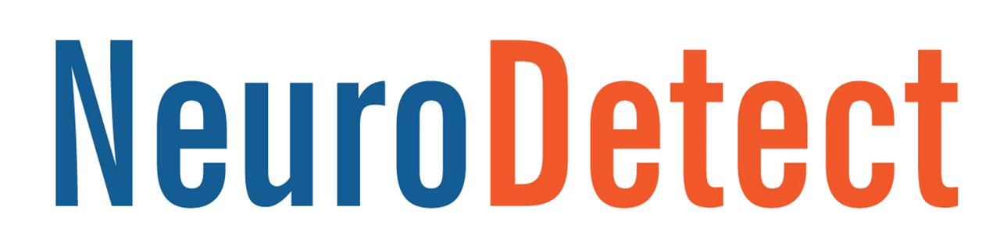

Experience

I worked for Google as a Software Developer Intern on the Android Things Proxemics team. I created an application that detected entity distance based only on the images extracted from an Android camera by performing facetracking using OpenCV. I also developed a client demo application for real-time face tracking and distance updates using the Proxemics API.

NeuroDetect's goal was to create mobile brain function diagnostic analytics and tools for brain performance assessment using electroencephalography. I developed an Android application for administering memory, image recognition, and reflex diagnostic tests for concussion patients to measure their recovery progress.
I created a classification algorithm for images of Abalone and Nucella larvae in Computer Science Department with Dr. Gurman Gill. By testing different feature detectors, extractors, and image filtering techniques from OpenCV library to maximize accuracy, I was able to achieve an accuracy of 96% for hundreds of larvae images currently being studied in Biology Department using SVM
I researched applications of electroencephalography in Computer Science Department with Dr. Bala Ravikumar. Throughout this summer, I created the P300-Matrix Speller hands-free text editor program through use of Emotiv EPOC headset in MATLAB. I also predicted auditory stimuli based on EEG data by extracting key features from data and applying a machine learning algorithm.